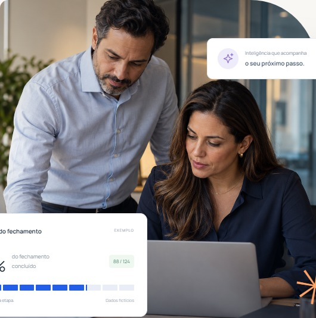

Fechamento, análise financeira, automação fiscal e agentes de IA em uma plataforma, para acompanhar a evolução do seu negócio.

Tecnologia que elimina tarefas repetitivas, transforma dados em decisões e ajuda escritórios contábeis e empresas a crescer com controle.
Quatro pilares e os serviços da Latec para implantar, integrar e evoluir com você.
Itens “Em breve” estão em desenvolvimento. Integrações e automações dependem de acesso autorizado, viabilidade técnica e legislação aplicável.
Os dados saem do ERP, passam pela plataforma e chegam à diretoria prontos para decisão.
Combine os pilares conforme a sua operação. Preços sob proposta.
Use as soluções Latec no seu escritório e indique ou revenda para os seus clientes, com contrato comercial.
Quero ser parceiroAgende uma demonstração, sem compromisso.